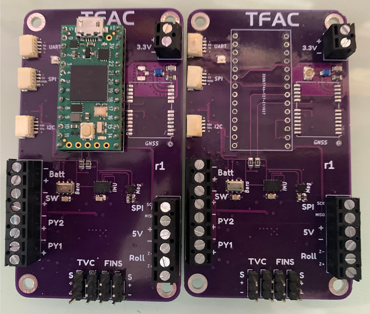

December 2021
Dev Log 5
Not much progress was made this month mainly because of preparation of my school exams which are scheduled for January 2022. I assembled another TFAC flight computer, but I found out that the GPS radio chip doesn’t work. A pin on the GPS chip is supposed to pick what communication protocol based on whether it is pulled low or high. I pulled it low when it was supposed to be pulled high so the chip could not actually communicate with the microcontroller. In December I also wrote my Kalman Filter but it has some issues which I have yet to uncover but I understand the math a lot better now (but not completely)!

Goals for December 2021
In January I intend to finish my Kalman Filter and finish more of the Flight Software. I do not have a lot planned for January because of my mid-term exams that I mentioned earlier.